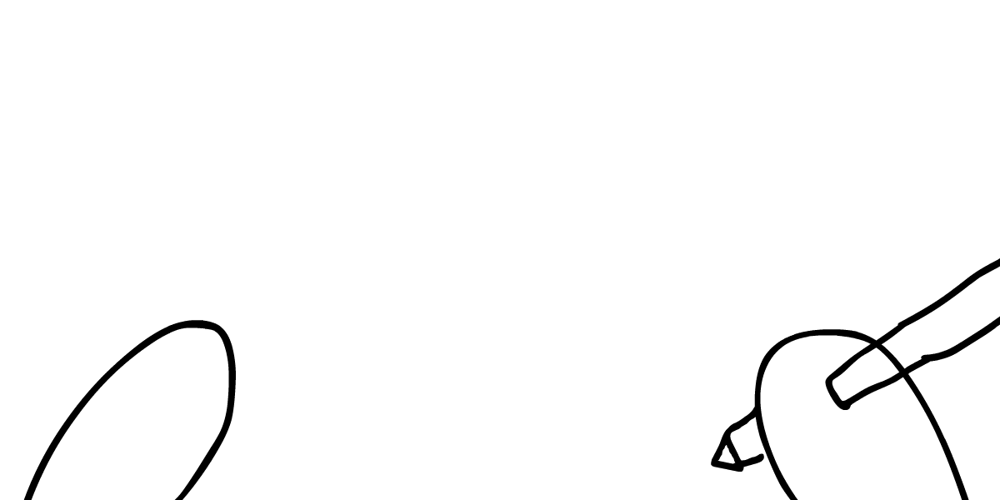

En la mitología griega, Mnemosyne, la diosa de la Memoria...
...era la madre de las Musas, las diosas de la inspiración.
música
teatro
fanfic raro
¿Qué tal les va a la Memoria e Inspiración en los colegios?
bla bla bla bla bla bla bla bla
Pues eso.
Nó solo que técnicas comunes como clases, empollar y releer son aburridas,
la ciencia ha mostrado que ni siquiera funcionan bien.*
* ¡todas las fuentes y enlaces estarán al final del cómic!
¿Y si te digo que hay una forma
que funciona bien y es divertida?
¿Y si te digo que hay un juego de memoria que, jugando unos 20 minutos al día,
te permite guardar lo que elijas en tu mente para siempre?*
* hasta que mueras
Y es increíble.
Empecé a usar Repaso Espaciado a principios de año para aprender francés.
En dos meses, aprendí más palabras que en dos años
de clases de francés en el instituto.
Desde entonces, he usado Repaso Espaciado para recordar todo tipo de cosas...
notas de ukelele
código de ordenador
cumpleaños de amigos
¡cualquier dato curioso que encuentre en libros o artículos!
...y este jueguito de memoria se hizo una parte clave de mi vida.
En resumen, Repaso Espaciado = pruebas + tiempo.
Haces pruebas con un dato repetidas veces, separando tus repeticiones en el tiempo.
(¿Pero no durará demasiado? Veremos más tarde que hay un truco...)
Repaso Espaciado es gratis, basado en evidencia, y tan sencillo que lo puedes hacer con una caja de zapatos.
nicky cállate
Entonces, ¿cuál es la trampa? ¿Por qué no está todo el mundo usándolo?
La trampa que hacer cualquier hábito nuevo es difícil,
especialmente uno raro como Repaso Espaciado.
llega el profe
Por eso hice este comic interactivo mal dibujado.
En este comic del Repaso Espaciado,
te mostraré POR QUÉ funciona, CÓMO funciona...
...y te ayudaré a que empieces HOY.
También, a lo largo del cómic,
puedes probar lo que has aprendido,
en intervalos separados.
Es decir: usarás Repaso Espaciado para aprender sobre el Repaso Espaciado.
Tal que así:
Aún así, ¿no es "aprender de memoria" malo?
¿No podemos buscar todo hoy en día?
¿No deberíamos aprender mejor creatividad y pensamiento crítico?
No hay un "mejor".
La ciencia cognitiva muestra
que necesitas memorización para la creatividad y el pensamiento crítico.
(¡Imagina escribir una redacción sin conocer las palabras!)
MEMORIA
arte
ciencia
El Repaso Espaciado no es un "truco para estudiar".
Es una forma de recuperar el control de tu mente.
De hacer la memoria a largo plazo una opción.
De crear una pasión por aprender...
...de crear to propia Musa interior.
Tony Stark casi resopla cuando una mano con guante bajó por su espalda.
La presión era suave y casi reconfortante.
Obama se ríe. "Dices, el-
Empecemos.
LA CIENCIA del
REPASO ESPACIADO
En 1885, Hermann Ebbinghaus hizo una acción de masoquismo científico.
El psicólogo alemán memorizó miles de palabras sin sentido,
anotó cuántas se había olvidado con el tiempo, y descubrió...
LA CURVA DEL OLVIDO
Observó que olvidas la mayoría de lo que aprendes en las primeras 24 horas,
y, si no haces repasos, tus memorias restantes se pierden exponencialmente.*
* técnicamente la curva no es exactamente
exponencial, pero bueno, se parece.
Los filósofos han debatido sobre la memoria durante milenios,
pero Ebbinghaus fue el primero en hacer experimentos.
(que han sido repetidos)
ay...
máta-
me...
Por ese motivo, Hermann Ebbinghaus es conocido como
el pionero de la ciencia de la memoria.
Aquí tienes una simulación de la Curva del Olvido.
Cambia la velocidad del olvido. ¿Qué le pasa a la curva?
Como puedes ver, cuanta menos velocidad, más llana es la curva,
es decir, más dura la memoria.
La velocidad de olvido de una persona depende de la persona y su memoria...
¡hola! ¿cómo decías que te llamabas?
jaja. soy susan.
Pero en general, la "velocidad de olvido" baja cada vez que lo recuerdas activamente.
(comparado con releer pasivamente)
susan. susan. susan. susan. susan.
(pero, cuando dejas de practicar, sigue olvidándose)
¡bueno, adiós, sarah!
susan.
¡adiós, sandy!
SUSAN.
Aquí está otra vez la simulación, pero con una sesión de repaso.
(línea gris: lo que sería la memoria sin ese repaso)
Cambia el tiempo del repaso, a ver qué le ocurre a la curva:
Un sólo repaso refresca la memoria por un tiempo, pero a la larga,
por el olvido exponencial, un sólo repaso no cambia nada.
¿Hay una forma mejor de aprender?
¡Sí que hay! El truco de recordar...
...es casi olvidar.
Para entenderlo, piensa en entrenar tus músculos.
No te sirve de nada un peso demasiado ligero...
...ni uno demasiado pesado.
Lo mismo se aplica a entrenar el cerebro.
Necesitas dificultad óptima: el punto óptimo de dificultad.
cómodo
incómodo
demasiado fácil
punto óptimo
demasiado difícil
Por tanto: lo mejor para aprender algo, es recordarlo...
...cuando estás a punto de olvidarlo.
La misma simulación de antes ahora muestra el
punto óptimo,
cuando has olvidado sólo un poquito.Pon el repaso en el medio del punto óptimo. ¿Qué ocurre?
¿Lo ves? Si haces un repaso en el momento perfecto,
¡puedes ralentizar un poco el olvido!
Pero ¿y con varios repasos?
Pongamos que eres una persona
vaga
eficiente, así que sólo haces 4 repasos.
Pregunta:
¿cuál es la mejor forma de repartir los repasos?
susan
¿Deberías tener huecos del mismo tamaño?
¿Ir aumentándolos?
¿O decreciéndolos?
¿O hacerlo impredecible, para mantener la atención?
= repaso
tiempo
huecos iguales:
crecientes:
decrecientes:
al azar:
Intenta adivinarlo,
y cuando tengas respuesta, voltea la tarjeta ↓
¡Lo cual parece muy contradictorio!
Puedes demostrarte que es cierto jugando con la simulación de abajo.
Lleva todos los repasos al medio del punto óptimo.
¿Qué espacios salen?
(Para probar que no es coincidencia,
en este otro puedes cambiar
la velocidad de olvido y el punto óptimo.
Observa cómo en todos los casos normales,
¡la mejor opción son los "huecos crecientes"!)
¿Por qué los huecos crecen?
Porque cada vez que repasas en el punto óptimo del olvido,
la velocidad de olvido baja...
eres
¡SUSAN!
–qué co
...¡por lo que tardarás más
en llegar al punto la próxima vez!
¿Y sabes lo mejor de todo?
Que si haces tus repasos en el momento justo...
...puedes guardar cualquier cantidad de cosas en tu memoria,
PARA SIEMPRE.
Hablando de hacer repasos para aprender,
vamos a hacer memoria sobre lo que hemos aprendido:
Pinta bien,
pero encontrar un horario de Repasos Espaciados debe ser díficil, ¿verdad?
¡Al revés!
Es tan sencillo, que te puedes hacer un planificador automático...
...con una caja de zapatos.
EL ARTE del
REPASO ESPACIADO
No es necesario usar una caja de zapatos,
pero es más divertido si la usas.
este es mi entrenador
???
es muy DEPORTIVO
ya no somos amigos
(Después veremos varias apps de Repaso Espaciado,
como Anki y Tinycards)
Esto se llama la Caja de Leitner.
¡Es como un juego de cartas que juegas contra ti!
Primero divides tu caja en siete "Niveles".
(Puedes tener más o menos si lo prefieres)
Todas las tarjetas nuevas empiezan en Nivel 1.
(Si estás empezando con el Repaso Espaciado, recomiendo 5 tarjetas nuevas al día.)
Cuando repasas una tarjeta y la aciertas,
sube un Nivel.
(Si estás en el último Nivel, ¡felicidades!
Tu tarjeta se retira al cielo de tarjetas.)
Pero si la repasas y la contestas mal... se tiene que ir
de vuelta al Nivel 1.
(Si ya está en el Nivel 1, buenas noticias:
puedes seguir haciéndote pruebas hasta que la aciertes,
y subirla al Nivel 2)
¿Pero cuándo repasamos tarjetas?
Ese es el truco.
En la Caja Leitner, repasamos las de Nivel 1 cada día,
las de Nivel 2 cada dos, las de Nivel 3 cada CUATRO días,
las de Nivel 5 cada OCHO días, y así continúa...
¡El patrón consiste en duplicar el hueco (número de días entre repasos) para cada Nivel!
Así es como se vería el calendario durante 64 días:
(Nota: el motivo de repasar el Nivel 1 al final
es que así verás tus tarjetas nuevas y las que olvidaste de Niveles superiores.)
(Al final de una sesión diaria de Repaso Espaciado,
no dejes tarjetas en el Nivel 1.
Prueba hasta que las puedas acertar todas,
¡y muévelas al Nivel 2!)
(Nota 2: Hay apps de Repaso Espaciado como Anki que usan un algoritmo más sofisticado...)
(...pero en el fondo, trabajan con los mismos principios que la Caja Leitner)
(Nota 3: Ah, y con unas cuantas tarjetas y cinta,
¡puedes hacer tu propio calendario en bucle!)
(al final pondré un tutorial en vídeo para hacer una Caja Leitner)
¡Ahora veremos el juego en acción!
Aquí hay una simulación paso a paso de la Caja Leitner:
(veremos una por meses más tarde)
Cada repaso diario dura unos 20-30 minutos.
En vez de ver un episodio de una serie, puedes jugar con las tarjetas;
y recordar todo lo que quieras de por vida.
Pero los hábitos son díficiles. Si empiezas con mucho, no avanzarás nada...
Pero si empiezas con poco, puedes coger impulso,
y hacer la bola de nieve más y más grande.
Por eso recomiendo empezar con 5 tarjetas nuevas cada día.
Cuando estés a gusto con eso, puedes cambiar a 10 nuevas al día.
Y luego 15, 20, 25, 30.
And at 30 new cards a day, you can learn 10,000+ new facts/words/etc a year.
na na na na na na na na na
katamari damacy
Aquí está la simulación mes a mes.
¡Úsala para calcular por adelantado cuánto tú puedes aprender con el Repaso Espaciado!
Ya está. Así es como puedes elegir hacer memorias a largo plazo.
Vamos a asimilarlo. Descansa, y repasa lo que hemos aprendido:
El Repaso Espaciado casi parece demasiado bueno para ser cierto.
Y lo es... SI si caes en unas trampas muy comunes.
La memoria no es una estantería
donde guardas tomos gigantes al azar para impresionar a los demás.
un montón
de basura
que nunca
llegarás
a leer
Es decir: el Repaso fallará si tus tarjetas se ven
pesadas, desconectadas o sin sentido.
En realidad la memoria es como un puzle: lleno de piezas pequeñas y conectadas.
(Así funcionan también las neuronas)
No se trata de la colección, sino de su conexión.
Así que, para aprovechar al máximo el Repaso Espaciado,
haz tus tarjetas...
PEQUEÑAS
CONECTADAS
y CON SENTIDO
Vamos a ver cómo.
PEQUEÑAS
Esta es una mala tarjeta:
Demasiado grande. Demasiada información.
¡Vamos a cortarla en piezas más pequeñas!
Como regla de oro, cada tarjeta debería tener una sola idea.
Tal que así:
Datos conectados a datos.
Pero hay otras formas de que las tarjetas estén...
CONECTADAS
Esta tarjeta... está bien.
Una palabra en español por delante, y en francés por detrás.
Es lo normal para la mayoría de tarjetas de lenguajes:
¿Pero sabes qué haría que se quedara más en la memoria?
¡Si la conectas a
fotos, sonidos, contexto, o detalles personales!
Tal que así:
La cara ahora tiene un dibujo de un gato (foto)
con una frase en francés con un hueco (contexto: gramática)
sobre mi gato de la infancia, Stripes. (personal)
El dorso ahora tiene un símbolo del género del nombre (foto),
su pronunciación (sonido*),
y un aviso de la versión femenina del nombre. (contexto: jerga)
* Obiamente las tarjetas de papel no tienen sonidos.
¡Pero apps como Anki/Tinycards sí!
Pero la conexión más importante de todas
es conectar tu aprendizaje a algo...
CON SENTIDO
Personalmente, así he aprendido mejor:
Primero, intento (énfasis en intento) hacer algo.
tocar el ukelele
leer cómics franceses
crear un juego web
Inevitablemente, me atascaré.
En ese momento, buscaré lo que necesite,
y aprenderé algo.
cómo se toca Fa#?
¿qué significa "attraper"?
¿por qué javascript es un trozo de mi–
Y así sigue.
Esa, creo, es la mejor forma de mantenerse motivado mientras se aprende:
Asegurándote de que tu aprendizaje ayuda a realizar algo que te importa.
Hablando de aprender, vamos a intentar recordar lo que hemos aprendido:
(¡esta es la antepenúltima vez!)
En la comunidad del R.E., el consenso es que,
tras un tiempo, deberías hacer tus propias tarjetas.
Así, conectas datos a lo que tú conoces, lo que a tí te gusta.
Por eso, en la última parte de este cómic interactivo,
vas a hacer tus propias tarjetas!
Y esas tarjetas serán sobre...
TI
¡COMIENZA HOY!
Para ayudarte a empezar hoy con el Repaso Espaciado,
tendrás que responder cuatro preguntas:
¿QUÉ?
¿POR QUÉ?
¿CÓMO?
¿CUÁNDO?
¡Responderás a esas preguntas haciendo tarjetas!
Aquí está la cara de la primera, nuestra primera pregunta:

Por ejemplo, puedes usar Repaso Espaciado para ayudarte a aprender...
un nuevo idioma
un nuevo instrumento
programación
detalles de las vidas de tus amigos
¡cualquier cosa interesante!
todos los pokémon
Ahora, escribe tu respuesta en el dorso:
(nota: después puedes volver aquí y cambiar tu respuesta)
Pero acuérdate de que para que funcione el Repaso,
necesitas conectarlo a algo que te importa.
La siguiente pregunta es:
Puede que sea muy filosófico, así que aquí tienes
ejemplos del por qué detrás de un qué:QUÉ: un nuevo idioma
POR QUÉ: para hablar a amigos, familia, pareja, en su idioma natal
QUÉ: programación
POR QUÉ: para ganar dinero
QUÉ: cualquier cosa interesante
POR QUÉ: ¡por la propia curiosidad!
¿Cuál es tu "por qué"?
Ya tienes tu qué y tu por qué... ¡pero necesitamos elegir un cómo!
¿Qué herramienta o app quieres usar?
La siguiente tarjeta dice:
Yo ahora uso
La Caja Leitner,
pero mis amigos usan
Anki,
y durante un tiempo usé
TinyCards.
Ésta es su comparación:
Caja Leitner
Lo bueno: manualidad, fácil de usar
Lo malo: no tan portátil como una app
Anki (app)
Lo bueno: comunidad enorme, código abierto, muchas funciones potentes
Lo malo: algo fea
TinyCards (app)
Lo bueno: diseño precioso, fácil de usar
Lo malo: máximo de 150 tarjetas por baraja, no te deja decidir si acertaste
(¿Prefieres otra cosa?
Otras herramientas:
SuperMemo,
NimbleNotes,
Mnemosyne)
* anti-aviso: no estoy afiliado con ninguna de esas.
¡sólo creo que son buenas y útiles!
Así que, ¿cuál va a ser?
¡Sólo queda una tarjeta!
En verdad, hacer R.E. es bastante fácil...
pero hacerlo como un hábito diario es difícil.
¿Por qué? Porque coger impulso en cualquier hábito nuevo es difícil.
Difícil, pero simple.
La ciencia de los hábitos muestra que si haces lo mismo, dada la misma señal,
constantemente...
¡pasa un buen día!
¡gracias, igualmente!
¡felices fiestas!
¡gracias, igualmente!
¡aquí tienes el cambio!
¡gracias, igualmente!
...se hará un hábito, para bien o para mal.
Para el hábito de E.R., nuestra pregunta es:
Por ejemplo, podrías jugar el juego de Repaso Espaciado...
cuando te despiertas
en el tren o bus
antes de dormir
No importa mucho cuándo lo hagas, mientras lo hagas
diariamente (más o menos, puedes saltarte un día de vez en cuando).
(Consejo: cuando quiero crear un hábito nuevo,
dibujo un círculo en un calendario por cada día que lo haga)
(¡Es un juego conmigo mismo! El objetivo es no romper
la racha, y hacer la cadena más larga que pueda.)
Now, let's fill out that final flashcard:
¡Y aquí están tus cuatro nuevas tarjetas, todas ellas sobre ti!
Pero como dije, quiero que tomes control de tu memoria hoy.
No "algún día", no "mañana", HOY.
para ayudarte...
vamos a bajar unas
COSITAS CHULAS
PRIMERO:
¡para recordarte jugar a Repaso Espaciado a diario!
SEGUNDO:
Y finalmente,
TERCERO:
¡un .zip de todas las tarjetas con las que has practicado en este cómic!
(Estas pueden ser las tarjetas de los primeros días de Repaso Espaciado,
¡para ayudarte a comenzar! Como extra, lograrás recordar todo lo que
aprendiste hoy, casi para siempre.)
Lo que me recuerda...
un último adiós,
por los viejos tiempos,
¡el canto del cisne!
...repasemos las tarjetas, todas ellas:
Sniff...
Siempre me cuesta decir adiós...
PRRF
Echaré de menos este rato juntos...
...¡pero espero que nos sigamos recordando!
Si eres estudiante, espero que el Repaso Espaciado
te ayude a tomar las riendas de tu aprendizaje.
Si eres docente,
por favor, por favor, cuéntale a tus estudiantes sobre el Repaso Espaciado
(y otros hábitos de estudio útiles) pronto.
Pero estés estudiando o no, espero que
el Repaso Espaciado te ayude a desarrollar tu memoria, tu mente, tu Musa...
"¡no!" gritó la mitocondria, según bajaba por la garganta cálida y húmeda de la célula. "yo no-
...y aprender uno de los grandes amores de la vida:
un amor duradero por aprender.
(¿Quieres aprender más? ¡Créditos y más información abajo!)
↓ ↓ ↓ ↓ ↓
Además, este cómic interactivo es
DOMINIO PÚBLICO
por lo que puedes usarlo con propósitos educativos, personales, o incluso comerciales.
¡Ya tienes mi permiso!
(Descargar el código)
(Traduce este cómic)
No obstante, sólo puedo hacer esto gracias a mis más de 100 patrones.
Me dejan seguir haciendo lo que amo. ¡Gracias! 💖
(¿Quieres unirte? ¡Haz click aquí!)
Lecturas Adicionales
Nosequé a lomos de gigantes...
Aquí tienes las lecturas que hicieron de Repaso Espaciado una parte de mi vida:
🤓
Augmenting Long-Term Memory
de Michael Nielsen
me mostró que el Repaso Espaciado no es solo una herramienta de memorización,
lo es para crear entendimiento profundo. Podría ser incluso una forma de vivir.
💬
Fluent Forever
de Gabriel Wyner
me convenció por fin a empezar (de nuevo) a aprender francés,
y crear la Caja Leitner. (my calendario de 64 días se adaptó de este libro)
🃏
20 Rules for Cards
de Piotr Wozniak me enseñó cómo sacar el máximo partido al Repaso Espaciado.
(Nota: ¡el autor también inventó el algoritmo que usa Anki!)
Y mis lecturas favoritas sobre la ciencia del aprendizaje:
👩🎓
Why Don't Students Like School?
de Daniel Willingham
me demostró que la "memorización a secas" es realmente necesaria
para la creatividad y el pensamiento crítico.
✏️
What Works, What Doesn't [PDF]
de Dunlosky et al
hace un resumen de más de 200 estudios sobre varios métodos de aprendizaje.
En resumen: técnicas comunes como releer o subrayar no funcionan,
técnicas menos comunes como espaciar y auto-evaluarse sí.
(Enlace al texto original)
👀 Gracias a todos mis jugadores de prueba por hacer que este proyecto no sea malo:
Aatish Bhatia, Adam Filinovich, Aimee Jarboe, Alex Jaffe, Amit Patel, Andy Matuschak, B Cavello, Chris Walker, Frank Lantz, Gal Green, Glen Chiacchieri, Hamish Todd, Henry Reich, Jacque Goupil, James Lytle,
Jez Swanson, Josh Comeau, Kayle Sawyer, Levi Robertson, Marcelo Gallardo, Martyna Wasiluk, Michael Nielsen, Mikayla Hutchinson, Mike Gifford, Monica Srivastava, Owen Landgren,
Paul Butler, Paul Simeon, Philipp Wacker, Pontus Granström, Rowan, Sebastian Morr, SpacieCat, Tanya Short, Tim & Alexandra Swast, Tom Hermans, Toph Tucker, Will Harris-Braun, Zeno Rogue
Introducción
·
La Ciencia
·
El Arte
·
¡Comienza!
·
Créditos
intenta recordarlo ↑
y dale la vuelta ↻
(quedan [N] cartas)
¿te acordabas de esto?
no, dale otra vez
¡sí, sigamos!
¡todo listo! sigue leyendo
↓
¡eso es todo, amigos!
↓
fuerza de la memoria →
tiempo →
velocidad:
punto óptimo:
cuándo se hace el repaso:
cuándo se hacen los repasos:
¡auto-optimizar!
En el día número [N]...
repasar Niveles [N] (en ese orden)
(¡y luego volvemos al día 1!)
Día [N]
repasar: Nivel
repasar Nivel [N]
añadir [N] tarjetas nuevas
total: ¡[N] tarjetas!
([N] retiradas)
siguiente paso
sig. día
sig. semana
sig. mes
[N] tarjetas nuevas al día
fallar el [N]% de tarjetas
REINICIAR
Pregunta:
escribe aquí tu respuesta
o elige uno de estos:
¡Cualquier cosa interesante!
Un lenguaje
Música
Programación
Personal
(otro)
Por quienes quiero
Por mi beneficio
Por mi curiosidad
(otro)
Caja Leitner
Anki
TinyCards
(otro)
Por la mañana
En el tren/bus/metro
Por la noche
(otro)
QUÉ:
POR QUÉ:
¡HAZ-
ME!
fondo de pantalla
un fondo de pantalla,
un fondo para el móvil,
¡un vídeo (en inglés) de mi amigo Chris Walker, de cómo hacer tu propia Caja Leitner!
(Y aquí hay un tutorial parecido, al estilo IKEA:)
¡un enlace a
TinyCards!
(recomiendo mirar sus
barajas geográficas)
enlaces a tutoriales para crear una Caja Leitner
[vídeo]
[pdf],
la app Anki,
y
TinyCards!
DESCARGAR TARJETAS
DESCARGANDO...
¡HECHO! Mira tu carpeta de Descargas.
Cómo Recordar Todo Casi Para Siempre
un cómic interactivo sobre arte y ciencia de la memoria
y el nombre de este juego es...
REPASO ESPACIADO
Repaso Espaciado = ____ + ____
pruebas + tiempo
3 técnicas de aprendizaje comunes pero inefectivas son...
...clases, empollar y releer
En la mitología griega,
la diosa de ____
era la madre de las diosas de
________
Memoria es la madre de Inspiración
la mejor forma de repartir los repasos es...
¡con huecos crecientes!
El pionero en ciencia experimental de la memoria es...
Hermann Ebbinghaus
La Curva del Olvido (sin repasos) tiene una forma...
(nota: baja rápido y después lento, "reducción exponencial")
La Curva del Olvido (con repasos bien separados) tiene una forma...
(nota: los huecos entre repasos crecen en longitud)
En la Caja Leitner, ______
el hueco (nº de días entre repasos) por cada Nivel
duplicamos el hueco
La Caja Leitner:
cuando aciertas una tarjeta, la mueves ______ .
al siguiente Nivel
La Caja Leitner:
cuando fallas una tarjeta, la mueves ______ .
¡de vuelta al Nivel 1!
Según un comic interactivo en internet,
mis tarjetas de Repaso Espaciado deben ser
______ ,
______ , y
______ .
pequeñas, conectadas y con sentido
¿Qué es esto?
Este orgánulo se llama "mitocondria".
La mitocondria es el motor de la célula.
Se encuentran en casi todos los organismos eucariotas (con núcleo).
La hipótesis más aceptada sobre el origen de la mitocondria es la Teoría Endosimbiótica:
hace unos 1500 millones de años, una célula procariota (sin núcleo) sobrevivió a que se la "comiera"
otra célula, y ha seguido viviendo dentro de ella desde entonces.
¿Qué es esto?
Mitocondria
La mitocondria es el _______ de la célula
motor
// nota extra: en serio, esteríamos muertos sin ellas.
La mitocondria se encuentra en casi todos los organismos ____ .
eucariotas
Las eucariotas son células que...
tienen un núcleo
// nota extra: "eu"=verdadero, "karyon"=núcleo
Las procariotas son células que...
NO tienen núcleo
// nota extra: "pro"=antes de, "karyon"=núcleo
La hipótesis más aceptada sobre el origen de la mitocondria es...
la Teoría Endosimbiótica
// nota extra: "endo"=dentro, "sim"=juntos, "bio"=vivir
Según la Teoría Endosimbiótica, la mitocondria apareció hace
____ años
hace unos 1500 millones de años
Según la Teoría Endosimbiótica, la mitocondria apareció cuando...